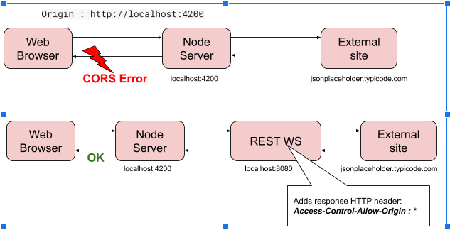

The posts and followers is read from
here and
here throught REST calls.
In order to solve CORS error (Cross-Origin Resources Safely) :
"No Access-Control-Allow-Origin header is present on the requested resource"
the app calls another REST web service that makes the actual call to get the posts and the followers.
Besides the retrieval of the data it adds the HTTP response header Access-Control-Allow-Origin: *
.
